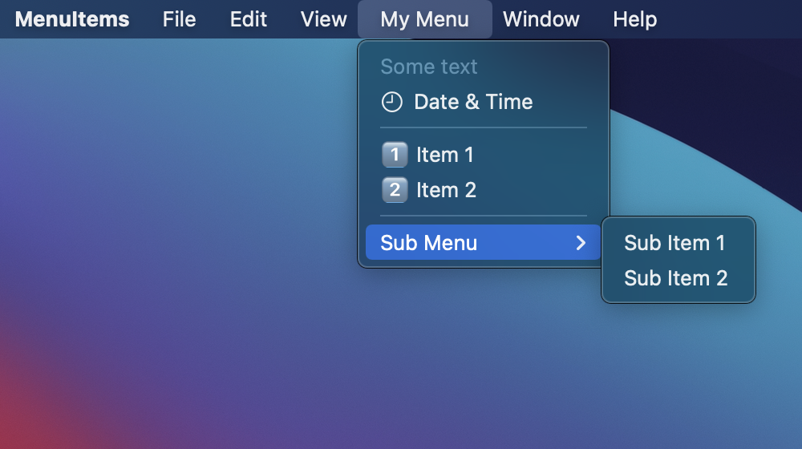

Menus in Mac apps are typically located at the top of the screen in the menu bar. Menu items can be added to an app's menu using the commands modifier on the WindowGroup.

import SwiftUI
@main
struct MenuItemsApp: App {
var body: some Scene {
WindowGroup {
ContentView()
}.commands {
CommandMenu("My Menu") {
Text("Some text")
Button(action: {}, label: {
Image(systemName: "clock")
Text("Date & Time")
})
Divider()
Button(action: {}, label: {
Text("1️⃣ Item 1")
})
Button(action: {}, label: {
Text("2️⃣ Item 2")
})
Divider()
Menu("Sub Menu") {
Button(action: {}, label: {
Text("Sub Item 1")
})
Button(action: {}, label: {
Text("Sub Item 2")
})
}
}
}
}
}
Swift Programming for macOS © 2023
Built by Gavin Wiggins